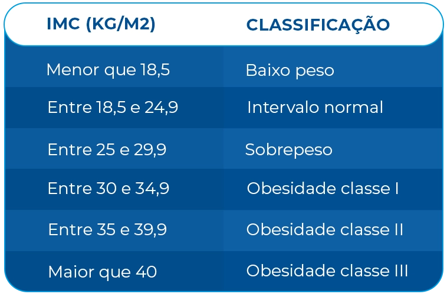

Calcule seu IMC:
Sobre o IMC

Criado no século 19 pelo matemático Lambert Quételet, o Índice de Massa Corporal, conhecido pela sigla IMC, é um cálculo simples que permite medir se alguém está ou não com o peso ideal. Muitas pessoas buscam descobrir seu IMC quando iniciam uma dieta específica ou uma atividade física.